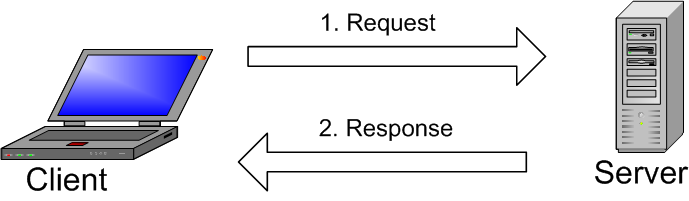
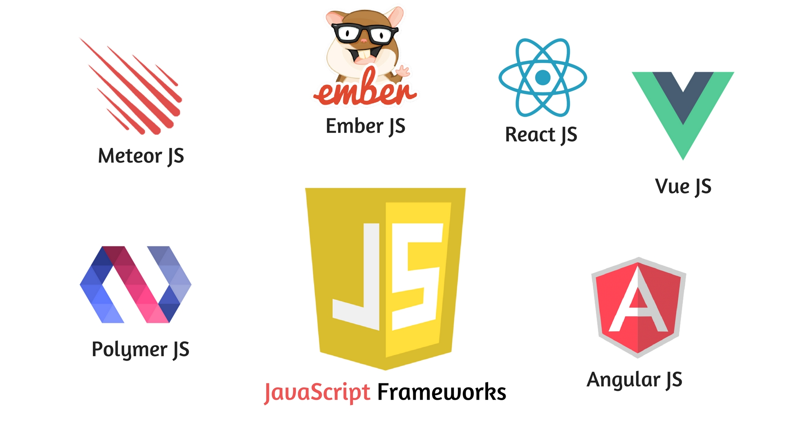
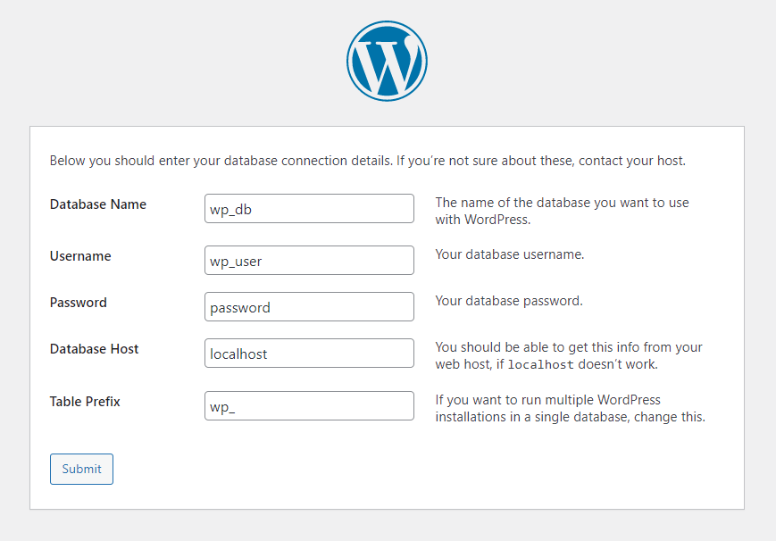

Giorno 1
Introduzione al WEB, ai suoi componenti e alle tecnologie.
The World Wide Web (WWW), commonly known as the Web, is an information system
where documents and other web resources are identified by Uniform Resource Locators
and are accessible over the Internet.
Un sistema informativo è un sistema formale, sociotecnico, organizzativo costruito per raccogliere, processare, salvare e distribuire informazioni.
identificatore univocoformattato in modo
standardche colloca una risorsa sul WEB.
https://
www.
reddit.com
/r/formula1/
IL WEB NON È INTERNET. Il web può essere visto come l'insieme di informazioni disponibili e di servizi raggiungibili tramite Internet.
Non è il WEB.
È l'infrastruttura comunicativa e computazionale sotto il Web.
Una Web App è un software che eroga un servizio tramite il web.
È un'applicazione
in esecuzione su un web server
accessibile tramite un web browser
dai client, che interrogano il server per ottenere informazioni e computazioni.
Il metodo più semplice per condividere informazioni
Io chiedo
Tu rispondi
Questo modello di comunicazione si trova a tutti i livelli di un'app web.
Parliamo tecnico ora: com'è strutturata una Web App?

e il codice dove sta?
Il Front End
Il Front End di un'applicazione web si occupa di
- Intercettare, filtrare e interpretare gli input dell'utente
- Presentare i dati
- Gestire il flusso di dati tra il client e il server
- Fare da guardia al server
Che tecnologie si usano nel front end?
- HTML
- XML
- CSS
- JavaScript
- TypeScript
HTML
Organizza il contenuto
Titolone!
Titolino!
Un po' ti testo riempitivo
Un bel paragrafo
- Una
- Lista
- Non
- Ordinata
- !
CSS
Colora il contenuto
Titolone Colorato!
Paragrafo col testo azzurro!
Testo bianco con lo sfondo nero!
JavaScript
Rendi il contenuto dinamico
Frameworks:
Il Back End
Il Back End di un'applicazione si occupa di
- Eseguire i comandi impartiti dall'utente dall'utente tramite il front end
- Sanificare i dati e inserirli nel sistema
- Eseguire computazioni sulla base di dati condivisa
- Formattare e inviare i dati al front end
PHP
Costruisci l'applicazione, server side
SQL
Gestisci il DataBase
CREATE TABLE Persons (
PersonID int,
LastName varchar(255),
FirstName varchar(255),
Address varchar(255),
City varchar(255)
);
SELECT FirstName, LastName
FROM Persons
WHERE
City = "Padova" AND
Address LIKE "%Piazza%"
Dove si può trovare una Web App?
Quasi ovunque
Commercio elettronico
CRM
Motori di ricerca
Blog
E-commerce
Applicazioni bancarie
E chi più ne ha più ne metta
Tra questi i CMS
Che cos'è un CMS:
Content Management System
Utilizzato per creare e gestire contenuti web in modo semplice
Non necessita di conoscenze avanzate di programmazione
Consente di gestire
-
Struttura
- Impaginazione
- Sezioni
- ...
-
Contenuto
- Dati
- Informazioni in qualsiasi formato
- ...
In pratica?
Dividiamoci tra front-end e back-end
CMA
Content Management Application
Pannello di controllo dell'utente
Editor di tipo WYSIWYG
What You See Is What You Get
Permette la modifica dei contenuti e della struttura in modo grafico e intuitivo
CDA
Content Delivery Application
Implementa tutte le funzionalità dei CMA
Memorizza i contenuti e li rende disponibili per l'elaborazione
L'unione fa la forza
Insieme CMA e CDA formano una piattaforma semplice da utilizzare.
Evoluzione dei CMS
Le tecnologie si differenziano per i modi di
Archiviare i contenuti
Presentare graficamente i dati
Come vengono archiviate le informazioni?
CMS Page-Based
CMS Object-Based
CMS Page-Based
Archiviano un insieme di contenuti su intere pagine
Poco scalabile
Crea componenti non facilmente riutilizzabili
CMS Object-Based
Archiviano il contenuto dividendolo in oggetti
o items
più
piccoli
Diversi oggetti sono:
- Testo
- Grafica
- Componente utilizzato per creare il testo
Molto flessibile e scalabile
Come vengono presentati graficamente i dati?
CMS tradizionali o non-headless
CMS headless
CMS Non-Headless
Creazione e presentazione dei contenuti unite in un solo livello
Risultato finale difficile da distribuire
Tutto il processo può essere gestito da una sola persona
CMS Headless
Architettura disaccoppiata tra contenuti e grafica
Si comunica attraverso API
Rende il contenuto facilmente adattabile a qualsiasi dispositivo
Prima di ricevere i dati dal back-end serve un tempo minimo di elaborazione
Perchè non combinare le due cose?
CMS ibridi
CMS Headless basati su oggetti
CMS per tutti
Ogni ambito ha un proprio CMS
Può essere generico o più specializzato
Open source
Gratuito e senza licenza
Necessario un web hosting separato
Permette di essere il più creativi e innovativi possibile...
...ma a che prezzo

Proprietario
Concesso in licenza
Pagamenti regolari per assistenza e manutenzione
Specifico per l'ambito di interesse
Non serve tanta creatività
Punto forte: la sicurezza
Software as a service (SaaS)
Concesso in licenza
Pacchetto di servizi unico:
- Trasferimento dati
- Archiviazione
- Gestione contenuti
- Supporto
Sistema basato sul cloud
Quanti CMS esistono?
Tantissimi, almeno uno per ambito:
- Aziendale B2B e B2C (CRM e simili)
- Turismo
- Commercio elettronico
- Software
- Mobile
- E molto altro...
Ogni CMS ha un nome diverso a seconda di cosa gestisce:
- Dynamic CMS, gestione dinamica della documentazione
- Learning CMS, gestione contenuti web per la didattica
Soffermiamoci sui contenuti web e aziendali
ECM
Enterprise Content Management
Gestione contenuti aziendali
Si sfrutta l'accesso a ruoli
Garantisce sicurezza per i dati aziendali
WCM
Web Content Management
Gestione contenuti web
Usato per:
- Creare
- Modificare
- Pubblicare
Il WCM più utilizzato?
Wordpress
XAMPP
Come creare contenuti con un CMS?
Esistono due diverse opzioni:
- Online
- Locale
Online
Accessibile da qualsiasi dispositivo
Connessione internet non sempre disponibile
Locale
Veloce
Offline
Non visibile da altri
Richiede l'installazione di un application server
...Ma è davvero uno svantaggio?
Che cosa è XAMPP:
Raggruppa in una sola piattaforma gli strumenti necessari per lo sviluppo web
X: Cross-Platform
Applicazione software funzionante su più di un sistema
Microsoft Windows
Sistemi Unix-like
A: Apache HTTP Server
Semplice, open source e testato
Web Application Server che elabora e risponde alle richieste del client
Funzionalità principali gestite dal file httpd.conf
Gestione del singolo sito con .htaccess
M: MySQL
Supportato da molti CMS e open source
DBMS (DataBase Management System)
Sistema software per la gestione efficiente del database
Client a riga di comando + Server
P: PHP
Open source
Linguaggio di scripting lato server
Integrato tramite API con Apache e MySQL
Esistono molte librerie disponibili online
P: Perl
Open source
Linguaggio di programmazione ad alto livello
Combina linguaggi come C e scripting shell Unix
Compatibile con diversi compilatori
#!/usr/bin/perl
while(<>){
my ($campo1, $campo2) = split /,/;
print "$campo1,$campo2\n";
}
Server FTP: FileZilla
Gratuito
Supporta i protocolli FTP e FTPS (SSL/TLS)
Mail Server: Mercury mail transport system
Gratuito
Gestione della posta elettronica tra più dispositivi
Passiamo alla pratica
Installiamo XAMPP
www.apachefriends.org/it/download.htmlGiorno 2
Introduzione a WordPress e best practice
Cos'è Wordpress?
È il metodo più semplice, e quindi il più polare per creare un sito web.
Oltre il 40% di tutti i siti web sono implementati con WordPress
Cos'hanno in comune Biden, Beyoncè e i Rolling Stones?
Usano tutti WordPress...
...perché è adattabile a molteplici utilizzi...
Ma soprattutto WP è estensibile
- Temi
- Plugin
Pratico: installiamo WordPress
phpMyAdmin è un modo pratico di visualizzare il database.
WordPress ha bisogno del permesso di usare tale database.
Per darglielo dobbiamo assegnare a WordPress un user.
Creiamolo assieme.
Apriamo phpMyAdmin all'indirizzo: localhost/phpMyAdmin.
Per accedere la prima volta:
| user: | root |
|---|---|
| password: | vuoto |
In primo luogo creiamo un database da dedicare a WordPress.
Premiamo su Nuovo e diamo un nome al database (ex. "wp_db").
Premiamo crea.
Ora dobbiamo creare un user per WordPress.
Rimanendo nel nuovo database, premiamo su Privilegi, quindi premiamo su Aggiungi account utente.
È importante ai fini della sicurezza non dare al nuovo user altri privilegi se non quelli
del database "wp_db".
In questo modo WP non potrà
andare a modificare gli altri dati.
Ora teniamo a mente i dati inseriti e procediamo alla vera e propria installazione.
Andiamo alla pagina localhost/prova.it.
Dopo aver impostato la lingua ed aver letto le informazioni, dobbiamo inserire i dati delle strutture appena create.
Dopo aver completato l'installazione possiamo finalmente guardare il nostro sito a localhost/prova.it.
oppure andare a guardare la console di WordPress localhost/prova.it/wp-admin.
WP è un CMS per Blog
O almeno lo era alla nascita
Il suo core si basa sui Post Type
- Post (Post Type: ‘post’)
- Page (Post Type: ‘page’)
- Attachment (Post Type: ‘attachment’)
- Revision (Post Type: ‘revision’)
- Navigation menu (Post Type: ‘nav_menu_item’)
Si possono definire anche dei tipi personalizzati
Custom Post Type
Pagine
- Indipendenti dal tempo
- Non sono organizzate usando categorie o altre tassonomie
- Possono avere template specifici per la singola instanza
- Possono essere organizzate in una gerarchia (Padre/Figlio) con altre pagine
Sono strutture statiche del sito, generalmente usate per le pagine
Home Page - Chi siamo - Contatti - FAQ
Post
I post sono un tipo di Post Type- Mostrate in ordine inverso in base alla data di creazione, dal più recente al più vecchio
- Hanno una data di creazione
- Dovrebbero avere sempre una tassonomia applicata
(Se manca ne viene automaticamente assegnata una di default)
Vengono usati per creare dei feeds
Allegati
- Contengono le informazioni (come nome o descrizione) dei file caricati
- Per le immagini, includono anche i metadata che verrano inseriti nella tabella wp_postmeta (grandezza, thumbnails, location)
Custom Post Type
Funzione avanzataSi possono creare dei tipi personalizzati e assegnare ad essi dei template specifici per la presenzione all'utente
WP è personalizabile ed estensibile
Ma come?
Temi e Plugin
Temi
In WP sono il cardine delle nostre WebApp
- Accedono ai dati
- Generano le view
- Registrano i supporti per i widget, le sidebar e menu
- Possono definire funzionalità proprie
Hanno svariati compiti
Giorno 3
WordPress Workshop